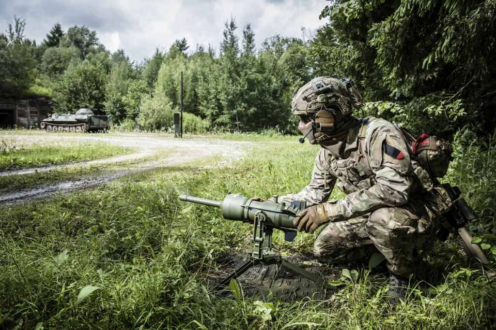

El mundo lleva ya mas de una decada re-armandose silenciosamente.
Esto nunca es en vano. El mundo se rearma: una nueva carrera ha comenzado.
El mundo se rearma: no es solo una carrera militar, es un reordenamiento global Desde la anexión de Crimea en 2014 hasta la escalada tecnológica de Irán y Corea del Norte, el planeta ha entrado en una nueva fase de tensiones. Viejas potencias reactivan sus arsenales; nuevas alianzas se forjan en las sombras. El rearme global no es solo una acumulación de armas, es una señal de que el mundo se prepara para un cambio profundo. Nuevas alianzas, viejas rivalidades y una economía mundial inestable crean el escenario perfecto para una nueva etapa de conflictos abiertos o híbridos. Quien no esté listo, será arrastrado.